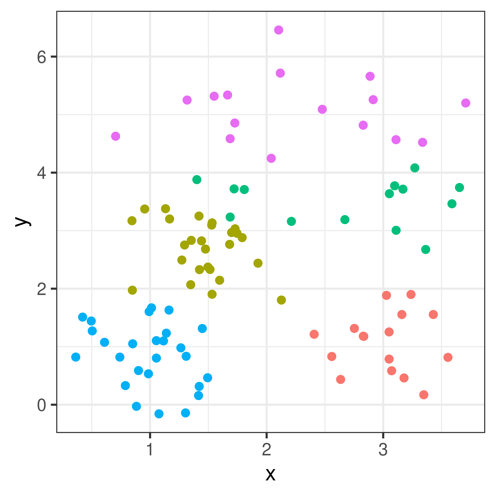
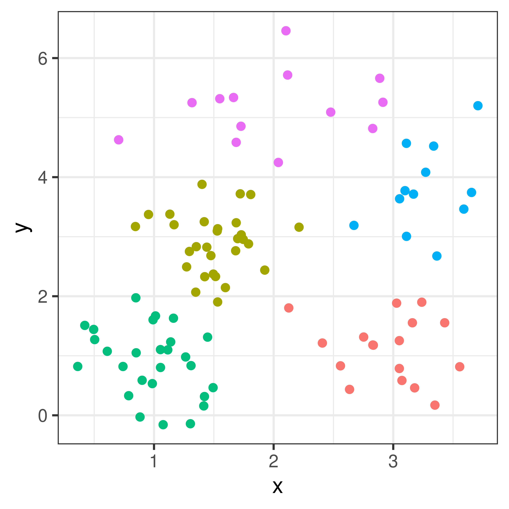
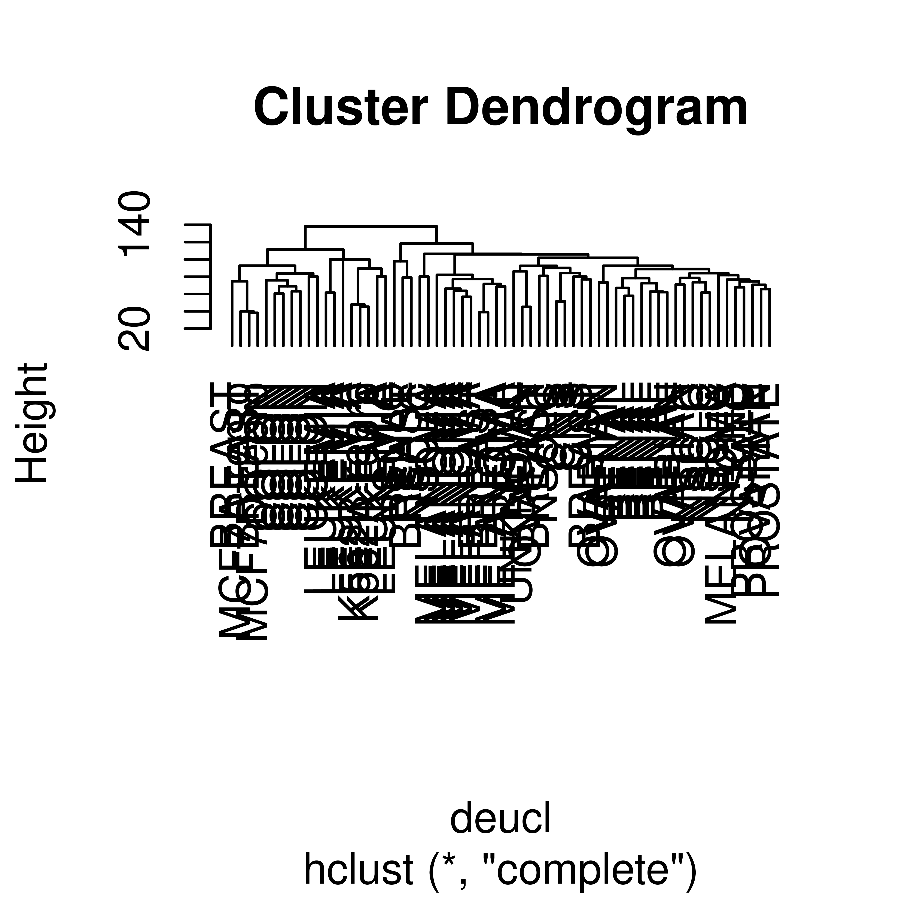
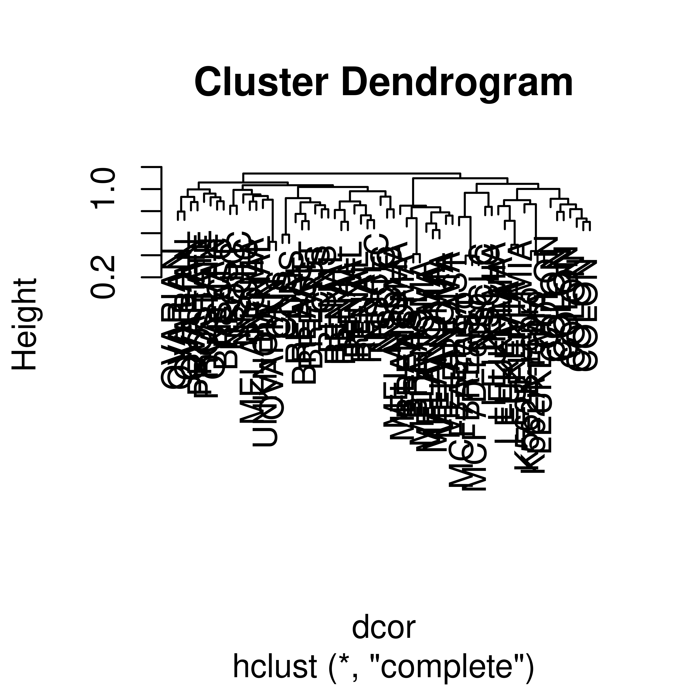

4 Clustering
Clustering is about grouping objects together according to similarity. The objects are grouped into clusters so that objectes within the same cluster are more similar to one another than to objects in other clusters.
Clustering is usually performed based on a set of \(n\) objects, each with \(p\) measurements. A single object \(i\) can thus be described by the vector \({\mathbf x}_i = [x_{i1}, x_{i2}, \dots, x_{ip}]\).
With only \(p=2\) measurements these measurements can easily be plotted and we could illustrate clusters by colors.
Figure 4.1: Three clusters
Clustering is commonly used for data exploration and to identify substructures in a data set.
There are many types of clustering algorithms, here we will only discuss K-means and hierarchical clustering.
4.1 K-means
The K-means algorith aims to dive all objects into exactly \(K\) clusters. \(K\) has to be given to the algorithm. The K-means algorithm minimize the variance within clusters, by iteratively assigning each object to the cluster with the closest mean (centroid).
The centroid of cluster \(k\) is the arithmetic mean of all \(n_k\) objects in the cluster
\[{\mathbf m}_k = \frac{1}{n_k} \sum_{i=1}^{n_k} {\mathbf x}_{i}\]
The algorithm can be performed as follows;
- Initialization. Select \(k\) initial centroids.
- Assign each object to the closest centroid (in terms of squared Euclidean distance). The squared Euclidean distance between an object (a data point) and a cluster centroid \(m_k\) is \(d_i = \sum_{j=1}^p (x_{ij} - m_{kj})^2\). By assigning each object to closest centroid the total within cluster sum of squares (WSS) is minimized. \[WSS = \sum_{k=1}^K\sum_{i \in C_k}\sum_{j=1}^p (x_{ij} - m_{kj})^2\]
- Update the centroids for each of the \(k\) clusters by computing the centroid for all the objects in each of the clusters.
- Repeat 1-2 until convergence
The initial centroids can be selected in several different ways. Two common methods are;
- Forgy’s method: Select \(K\) data points as initial centroids
- Randomly assign each data point to one out of \(K\) clusters and compute the centroids for these initial clusters.
4.2 Dissimilarity matrix
All clustering algorithms need a measure of similarity or dissimilarity between objects. As a similarity can be transformed to a dissimilarity, we will here focus on dissimilaities.
Dissimilarities between all pairs of objects can be described in a dissimilarity matrix. Most algorithms are based on symmetric dissimilarities, i.e. when the dissimilarity between a and b is the same as between b and a. Also, most algorithm require non-negative dissimilarities.
K-means uses the squared Euclidean distance as a dissimilarity measure, but there of course other ways to measure the dissimilarity between two objects (data points).
Common dissimilarity measures include;
Euclidean distance \[d_{euc} (x, y) = \sqrt{\sum_{j=1}^{p} (x_j - y_j)^2}\] Squared Euclidean distance \[d_{euc} (x, y) = \sum_{j=1}^{p} (x_j - y_j)^2\]
Manhattan distance \[d_{man} (x, y) = \sqrt{\sum_{j=1}^{p} |x_j - y_j|}\] Pearson correlation distance
Pearson’s correlation is a similarity measure
\[r = \frac{\sum_{j=1}^p(x_j-\bar x)(y_i-\bar y)}{\sqrt{\sum_{j=1}^p(x_j-\bar x)^2\sum_{j=1}^p(y_j-\bar y)^2}}\]
Using a transformation we can compute a Pearson’s correlation distance
\[d_{pear}(x,y) = \sqrt{1-r}\]
4.3 Hierarchical clustering
Hierarchical clustering does not require the number of clusters to be specified. Instead of creating a single set of clusters it creates a hierarchy of clusterings based on pairwise dissimilarities.

Figure 4.2: A hierarchical cluster dendrogram.
There are two strategies for hierarchical clustering agglomerative (bottom-up) and divisive (top-down).
The agglomerative strategy starts att the bottom with all objects in separate clusters and at each level merge a pair of clusters. The merged pair of clusters are those with the smallest dissimilarity.
The divisive strategy starts at the top with all objects in a single cluster and at each level one cluster is split into two. The split is chosen to produce the two groups with the largest possible dissimilarity.
With \(n\) objects to cluster both strategies will produce a dendrogram representing the \(n-1\) levels in the hierarchy. Each level represent a specific clustering of the objects into disjoint clusters. The heights of the branches in the dendrogram are proportional to the dissimilarity of the merged/split clusters.
4.3.1 Agglomerative clustering
Agglomerative clustering starts with all objects in separate clusters and at each level merge the pair of clusters with the smallest dissimilarity. The pairwise dissilimarities between objects are known, but a method for computing dissimilarity between clusters is needed, as so called linkage method.
The dissimilarity between two clusters A and B with objects \(a_1, \dots, a_{n_A}\) and \(b_1, \dots, b_{n_B}\), respectively, can be computed using one of several linkage methods.
Single linkage
Single linkage takes as a cluster dissimilarity the distance between the two closest objects in the two clusters.
\[d_{sl}(A, B) = \min_{i,j} d(a_i, b_j)\]
Complete linkage
Complete linkage takes as a cluster dissimilarity the distance between the two objects furthest apart in the two clusters.
\[d_{cl}(A, B) = \max_{i,j} d(a_i, b_j)\]
Average linkage
Average linkage takes as a cluster dissimilarity the average distance between the objects in the in the two clusters.
\[d_{al}(A, B) = \frac{1}{n_A n_B}\sum_i\sum_j d(a_i, b_j)\]
Single, complete and average linkage are the most common linkage methods and these can be combined with any pairwise dissimilarity measures.
Ward’s linkage
Ward’s linkage method minimize the within variance, by merging clusters with the minimum increase in within sum of squares.
\[d_{wl}(A, B) = \sum_{i=1}^{n_A} (a_i - m_{A \cup B})^2 + \sum_{i=1}^{n_B} (b_i - m_{A \cup B})^2 - \sum_{i=1}^{n_A} (a_i - m_{A})^2 - \sum_{i=1}^{n_B} (b_i - m_{B})^2\] where \(m_A, m_B, m_{A \cup B}\) are the center of the clusters \(A\), \(B\) and \(A \cup B\), respectively.
Note that Ward’s linkage method should not be combined with any dissimilarity matrix as it is based on the squared Euclidean distance. In the R function hclust either the Euclidean or squared Euclidean distance can be used in combination with the linkage method='ward.D' or method='ward.D2, respectively.
Figure 4.3: Hierarchical clustering of the same data set using Euclidean distance and four different linkage methods.
Exercises: Clustering
Download the two-dimensional data set.
- Try to cluster the data using the k-means algorithm (function
kmeansin R). Use Forgy’s method for initialization and select a value for \(k\). If you get a message that the algorithm did not converge in 10 iterations, try increasing the number of iterations - Plot the data and color by cluster id
- Run the same analysis again, do you get the same results? (You can compare two vectors of class identities using the function
table.) - By setting the argument
nstartto 4 the algorithm will automatically try four different (random) starting points. - Try different values for \(k\), run the k-means algorithm and collect the WSS (‘tot.withinss’). Plot WSS vs k. Thw WSS is always decreasing as k increases, but the curve can still give you a hint of which \(k\) to choose. The Elbow method for selecting \(k\) is to look at this curve and choose the \(k\) that you find at the bend of the curve, at the ‘elbow’. Which \(k\) would you pick based on this?
Exercise 4.2 The NCI60 data set consists of gene expression values for 6830 genes for 64 cell lines.
Using this data set investigate a few hierarchical clustering distances and linkage methods.The data can be downloaded in R using the following command
nci.data <- read.table("https://web.stanford.edu/~hastie/ElemStatLearn/datasets/nci.data.csv", sep=",",row.names=1,header=TRUE)
nci.label <- scan("https://web.stanford.edu/~hastie/ElemStatLearn/datasets/nci.label", what="")- What is the size of the data matrix? Do every column represent a gene or a cell line?
- Compute the Euclidean distance between cell lines.
This can be accomplished using the function
dist. Read the help text?dist. This function computes the distance between rows of the input data matrix. If the rows represent cell lines, you can rundist(nci.data), but if your cell lines are represented by columns you need to transpose the data matrix firstdist(t(nci.data)). - Cluster the cell lines using complete linkage hierarchical clustering, use the function
hclust. - Plot the result! (If you read the help text about
hclustyou should know how to plot)- Try changing the labels to something more informative (such as
label=nci.label). - Investigate the argument
hang, what happens if you set it to -1?
- Try changing the labels to something more informative (such as
- Try the linkage methods “single”, “average” and “ward.D” in addition to “complete”. Compare the results. Which method do you think is ‘best’?
- Pick the tree resulting from the method you think is ‘best’. How many clusters are there?
You can cut the tree on any level to get between 1 and 64 clusters. The function
cutreecuts either on a specific height (dissimilarity) or to get a specific number of clusters. - Compute the Pearson correlation between the cell lines, use the function
cor - Convert the correlation matrix to a dissimilarity matrix and cluster using complete or average linkage.
4.3.2 Solutions
## Load the data
df <- read.csv("clusterdata.csv")
## K-means with k=5, this uses Forgy's method, you can also try the default Hariigan-Wong
km1 <- kmeans(df[, c('x','y')], centers=5, algorithm ="Forgy")$cluster## Warning: did not converge in 10 iterations## Letter is just to name the clusters, A, B, C, ...
df$km1 <- LETTERS[km1]
##Plot
df %>% ggplot(aes(x=x, y=y, color=km1)) + geom_point() + theme_bw() + theme(legend.position = "none")
##Run kmeans again
km2 <- kmeans(df[, c('x','y')], centers=5, algorithm ="Forgy")$cluster
df$km2 <- LETTERS[km2]
df %>% ggplot(aes(x=x, y=y, color=km2)) + geom_point() + theme_bw() + theme(legend.position = "none")
## Automatically try several different starting points
km3 <- kmeans(df[, c('x','y')], centers=5, algorithm ="Forgy", nstart=10)$cluster## Warning: did not converge in 10 iterations
## Warning: did not converge in 10 iterationsdf$km3 <- LETTERS[km3]
df %>% ggplot(aes(x=x, y=y, color=km3)) + geom_point() + theme_bw() + theme(legend.position = "none")
## Try different k and compute within sum of squares
WSS <- sapply(1:10, function(k) kmeans(df[, c('x','y')], centers=k, algorithm ="Forgy", nstart=10, iter.max=20)$tot.withinss)## Warning: did not converge in 20 iterations
nci.data <- read.table("https://web.stanford.edu/~hastie/ElemStatLearn/datasets/nci.data.csv", sep=",",row.names=1,header=TRUE)
nci.label <- scan("https://web.stanford.edu/~hastie/ElemStatLearn/datasets/nci.label", what="")
## Size of data matrix (first number is rows, second number of columns)
dim(nci.data)## [1] 6830 64## Euclidean distance
deucl <- dist(t(nci.data), method = "euclidean")
## Complete linkage
hcl <- hclust(deucl, method = "complete")
## plot the dendrogram
plot(hcl, labels=nci.label)

## Compute using other linkage methods
hsl <- hclust(deucl, method = "single")
hal <- hclust(deucl, method = "average")
hwl <- hclust(deucl, method = "ward.D")
##Plot using same command as above
## Pearson correlation
r <- cor(nci.data, method = "pearson")
dcor <- as.dist(sqrt(1-r))
hcor <- hclust(dcor, method="complete")
plot(hcor, labels=nci.label)